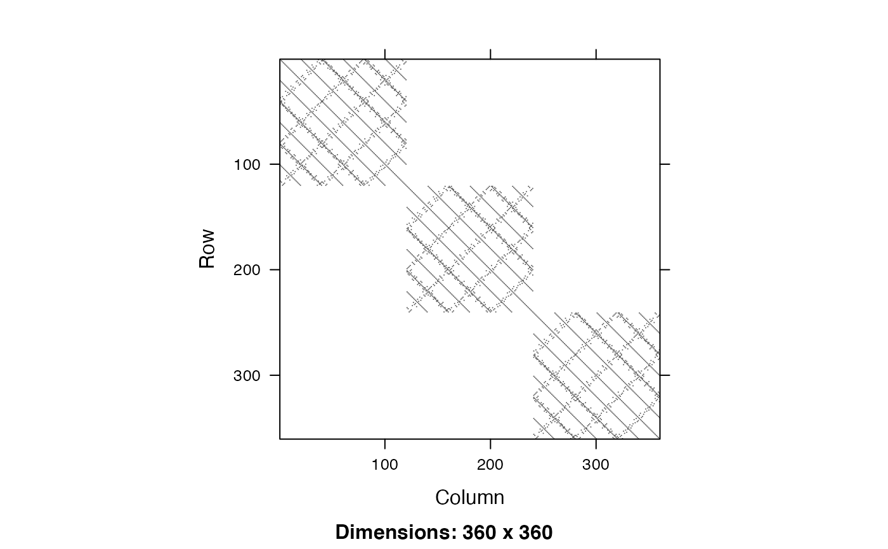

salamander.RdThis data set presents the outcome of three experiments conducted at the University of Chicago in 1986 to study interbreeding between populations of mountain dusky salamanders (McCullagh and Nelder, 1989, Section 14.5). The analysis here is from Lumley (1998, section 5.3)
data(salamander)A data frame with the following columns:
Whether the salamanders mated (1) or did not mate (0).
Cross between female and male type. A factor with four levels: R/R,R/W,W/R, and W/W. The type of the female salamander is listed first and the male is listed second. Rough Butt is represented by R and White Side is represented by W. For example, Cross=W/R indicates a White Side female was crossed with a Rough Butt male.
Identification number of the male salamander. A factor.
Identification number of the female salamander. A factor.
McCullagh P. and Nelder, J. A. (1989) Generalized Linear Models. Chapman and Hall/CRC. Lumley T (1998) PhD thesis, University of Washington
data(salamander)
salamander$mixed<-with(salamander, Cross=="W/R" | Cross=="R/W")
salamander$RWvsWR<-with(salamander, ifelse(mixed,
((Cross=="R/W")-(Cross=="W/R"))/2,
0))
xsalamander<-xdesign(id=list(~Male, ~Female), data=salamander,
overlap="unbiased")
## Adjacency matrix
## Blocks 1 and 2 are actually the same salamanders, but
## it's traditional to pretend they are independent.
image(xsalamander$adjacency)

## R doesn't allow family=binomial(identity)
success <- svyglm(Mate~mixed+RWvsWR, design=xsalamander,
family=quasi(link="identity", variance="mu(1-mu)"))
summary(success)
#>
#> Call:
#> svyglm(formula = formula, design = design$design, subset = subset,
#> family = family, start = start, influence = TRUE)
#>
#> Survey design:
#> svydesign(ids = id1, weights = weights, strata = strata, data = data)
#>
#> Coefficients:
#> Estimate Std. Error t value Pr(>|t|)
#> (Intercept) 0.66667 0.04653 14.328 3.80e-15 ***
#> mixedTRUE -0.28333 0.04445 -6.374 4.42e-07 ***
#> RWvsWR 0.34444 0.08745 3.939 0.000438 ***
#> ---
#> Signif. codes: 0 ‘***’ 0.001 ‘**’ 0.01 ‘*’ 0.05 ‘.’ 0.1 ‘ ’ 1
#>
#> (Dispersion parameter for quasi family taken to be 1.002786)
#>
#> Number of Fisher Scoring iterations: 2
#>